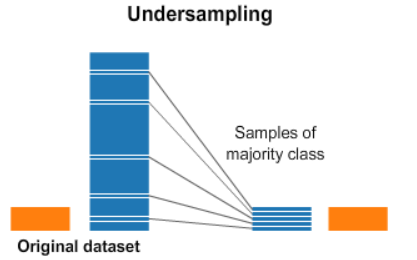
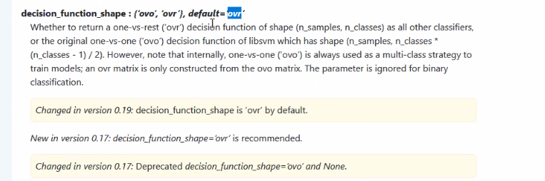

Receptive Field (RF)#
Concept#
The receptive field (RF) in the context of neural networks, particularly Convolutional Neural Networks (CNNs), refers to the region of the input space that a particular feature in the output space is dependent on. As you progress deeper into a network, the receptive field of neurons in subsequent layers expands. This means neurons in later layers capture more global and complex features from the input data.

Overview#
In simple terms, the receptive field is the portion of the input image that influences the value of a particular feature map in the output. The deeper the network, the larger the receptive field. This growth allows the network to recognize more complex patterns and relationships within the input data. Early layers detect simple features like edges and textures, while deeper layers identify complex structures like objects and faces.
Where:
Kernel Size: Size of the convolutional filter.
Total Stride: Product of strides of all previous layers.
Real-World Example#
Consider an image classification task. Early layers of a CNN might identify edges and corners. As the network deepens, the layers start recognizing parts of objects, like a car wheel or a human eye. The deepest layers can recognize full objects or even scenes, like a car or a group of people in a park. This hierarchical feature learning is enabled by the expanding receptive field.
Calculation#
Calculating the receptive field for a layer in a CNN involves considering the effect of all preceding layers. Each layer’s contribution depends on its kernel size, stride, and padding. For example, consider a simple CNN with the following layers:
Conv Layer 1: Kernel size = 3, Stride = 1, Padding = 1
Conv Layer 2: Kernel size = 3, Stride = 1, Padding = 1
Pooling Layer: Kernel size = 2, Stride = 2
To calculate the receptive field of the second convolutional layer:
First Conv Layer: \( \text{RFS}_1 = 3 \)
Second Conv Layer: \( \text{RFS}_2 = (\text{RFS}_1 - 1) \times \text{Stride} + \text{Kernel Size} = (3 - 1) \times 1 + 3 = 5 \)
Pooling Layer: \( \text{RFS}_3 = (\text{RFS}_2 - 1) \times 2 + 2 = (5 - 1) \times 2 + 2 = 10 \)
Thus, the receptive field of the output from the pooling layer is 10x10 pixels in the original input image.
Enlarge#
Operations that Enlarge the Receptive Field#
Deeper Network: Adding more layers increases the receptive field since each layer builds on the previous one.
Larger Convolutional Kernel: Bigger kernels capture more information from the input at each layer.
Stride Convolution: Using a stride greater than 1 spreads the receptive field further by skipping input locations.
Pooling: Pooling layers, especially max or average pooling, increase the receptive field by summarizing larger input regions.
Each of these operations contributes to a broader receptive field, allowing the network to learn more abstract and high-level features.
Distillation#
Knowledge distillation is a process where a smaller, student model is trained to replicate the behavior of a larger, teacher model. This process can be particularly useful for compressing complex models with large receptive fields into more efficient ones without significant loss of performance.
Example of Distillation#
Consider a large model trained to recognize objects in images with a high accuracy. We can use this model to generate predictions on a dataset, and then train a smaller model to mimic these predictions. The smaller model learns to approximate the large model’s behavior, including its effective receptive field, enabling it to achieve good performance with fewer parameters.
